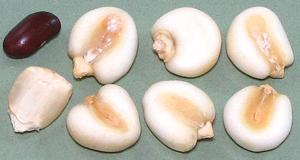
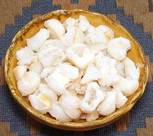

This corn has been grown in Peru for 7000 years or so, and is popular from southern Mexico to Chile. The photo specimens (Choclo Entero - "on the cob") were purchased frozen from a large market in Los Angeles (Burbank) that specializes in Mexican, Central American and South American foods. The larger was 7 inches long, 2-3/4 inches in diameter and weighed 13-1/8 ounces, with kernels about 3/4 inch across. The Mexican Cacahuazintle is a little smaller. The names after the "|" are "peeled" (Hominy), for use in Tamales, Pozole soup and the like. This is traditionally done by boiling the kernels in a solution of water and lye, calcium hydroxide or another strong caustic, then rubbing off the peels. This also has the effect of greatly increasing availability of niacin (vitamin B3) - untreated corn has none in an available form. This process is called Nixtamalization.
Be Aware: modern industrial processes can peel corn without use of caustics, but this does not convert the niacin. If it matters to you, look for indications on packages that mention lye, lime, sodium hydroxide, calcium hydroxide or "traditional processing".
More on Corn.
 Buying: Giant White Corn can be found in markets serving a Latin American community, though it sometimes takes some looking. The photo specimens, on the cob and peeled, came from a large Los Angeles (Burbank) market specializing in Mexican, Central American and South American foods. The kernel to the left under the kidney bean is a large unpeeled regular dry white corn kernel, this is not what you want. The peeled kernels were imported from Peru in a plastic bag, Goya and a couple other companies also sell the peeled product in 14 ounce plastic bags. It is the preferred corn for the important Mexican soup/stew Pozole.
Storing: Sealed in a 2-mil thick plastic bag or other
insect-proof container, and stored in a cool place, the dried corn will
last a year or more.
 Cooking: For the peeled kernels - Soak overnight. Pinch off the dark "eye" of each kernel (the point where it attached to the cob). This is tedious, but it will allow the kernels to "open like a flower" during cooking.
Cooking time suggested by Diana Kennedy is 3 hours, but I find 2-1/2
hours to be reasonably acceptable for most recipes, but for salads or
other recipes that will have no additional cooking, go for 3 hours.
There will always be some fiber, no matter how long you cook it.
The photo to the left shows corn after cooking 3 hours. Some kernels
did not "open like a flower", but they are tender enough to be eaten.
IF you need to peel your own corn kernels, here is my adaption of Diana Kennedy's method.